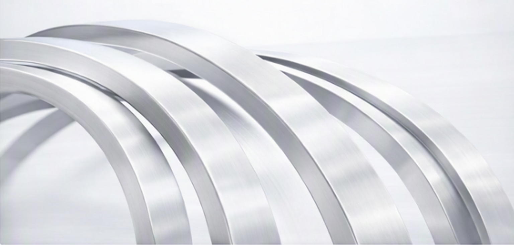
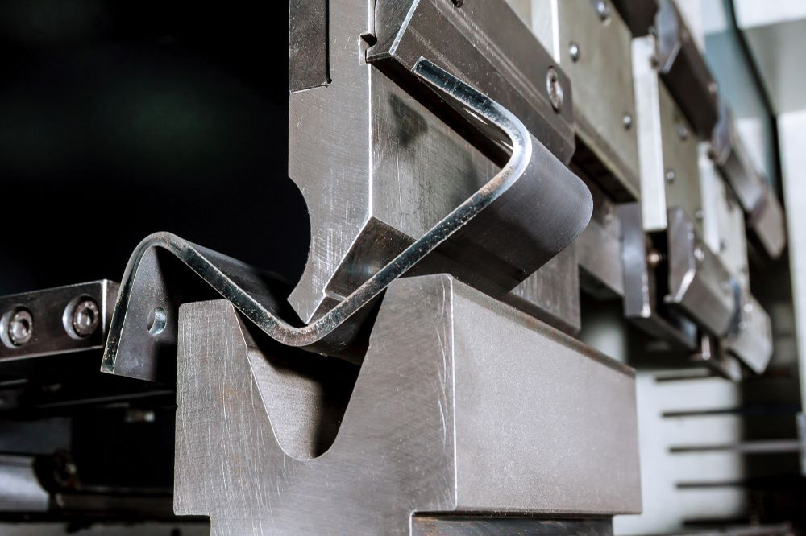
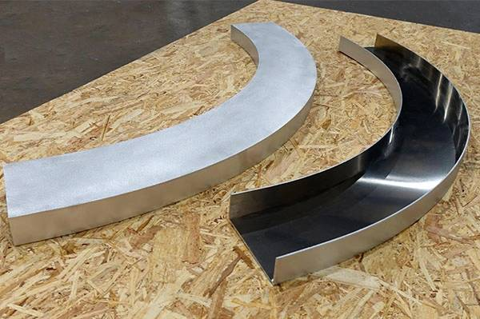
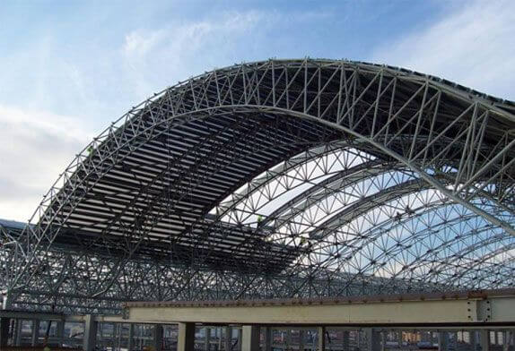

Curve perfette, precisione millimetrica e lavorazioni professionali su acciaio, inox e corten.

La centinatura è una lavorazione tecnica che permette di curvare profili metallici mantenendo resistenza, continuità e pulizia estetica. TEMA realizza centinature su acciaio, inox e corten con macchinari professionali, garantendo risultati perfetti anche su grandi raggi e su profili tubolari, piatti e strutturali.



Contattaci per una centinatura professionale e precisa.
Contattaci